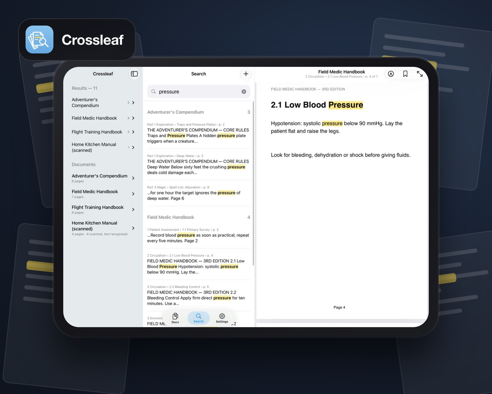
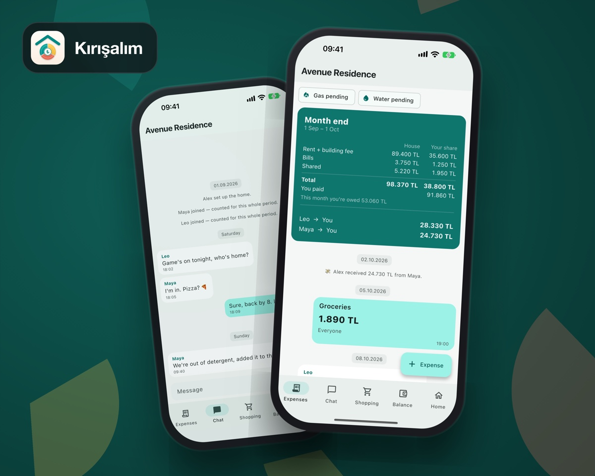

Apps born out of a need.
I'm Safa. When I need something and can't find it the way I want it, I sit down and build it. Everything here started like that: first it was my problem, then it turned out other people had it too. Design, code, the website, the support inbox: one person.
Istanbul · support@bulatapps.com


The need: a controller that fits my hands on stage
Midiboard
On the App Store · iPhone & iPad
I was already using my phone as a MIDI controller on stage, but where the buttons went was always somebody else's call. In Midiboard the screen is an empty grid: pads, keys, chords, faders, XY, step sequencers, whatever you need, wherever your hand goes.
It runs on iPhone and iPad and sends standard MIDI over Bluetooth or Wi-Fi: Ableton, Logic, Gig Performer, hardware synths, whatever you play.

The need: one search across every manual
Crossleaf
On the App Store · iPhone & iPad
It started with flight crews searching a term through hundreds of pages of manuals, one file at a time. Students and doctors turned out to have the same problem. Add all your PDFs, search once, and see every document and page it appears on in one list. Scanned pages work too.
It never connects to the internet, because the documents people search most are usually the ones that shouldn't leave the device. Free to download; one payment for unlimited documents, no subscription.

The need: the month-end sum between roommates
Kırışalım
On the App Store · iPhone · Android in testing · web
Every month, the same sum and the same argument with your roommates. Rent, bills, groceries: put them in Kırışalım and at the end of the month it works out who owes whom, in as few transfers as possible.
It never touches the money: you pay each other, whoever receives it taps "got it". It's the one app of mine with accounts and a server, because a house's ledger has to look the same on everyone's phone. The name is Turkish for "let's split it".
The need: a metronome that's always open
Small things for the Mac
This is where it all started: not another window to go and find, but a metronome and a tuner already sitting in the menu bar. Two toys followed. All free, a couple of megabytes each.


How I work
Little, but useful
When an app starts from a need, there's no room for extras. Even the Mac apps' sounds are generated in code, and these sites are plain HTML.
None of them collect anything: no analytics, no ads, no tracking. Apart from Kırışalım, they don't connect to the internet at all.
I play guitar and keys and make music; that's where most of my needs come from.
Before apps I worked on embedded systems and .NET, which is where the habit of counting bytes came from.
Built with
- Swift
- AppKit
- Core Animation
- AVAudioEngine
- UIKit
- CoreBluetooth
- Flutter
- Dart
- Supabase
- TypeScript
- C / C++
- Python
Open source
Sharing the parts that are useful
When something I wrote for one app looks useful elsewhere, I pull it out and open-source it.
-
QuietOverlay
Swift package · macOS 13+ · MIT
The shell underneath the desk toys. A whole-screen overlay window that clicks fall straight through — except where you say they should not — and that can never steal keyboard focus from the app you were typing in.
Free, MIT licensed.
Contact
Need something?
A problem, a question, or an idea you'd like to see exist… every app's mail lands in the same inbox, and I read all of it.
- support@bulatapps.comEmail · support for every app
- github.com/safabulatCode
- linkedin.com/in/safabulatThe long version